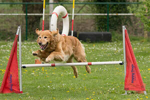
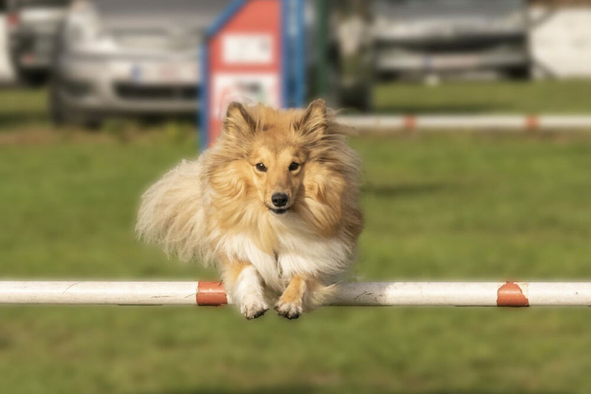
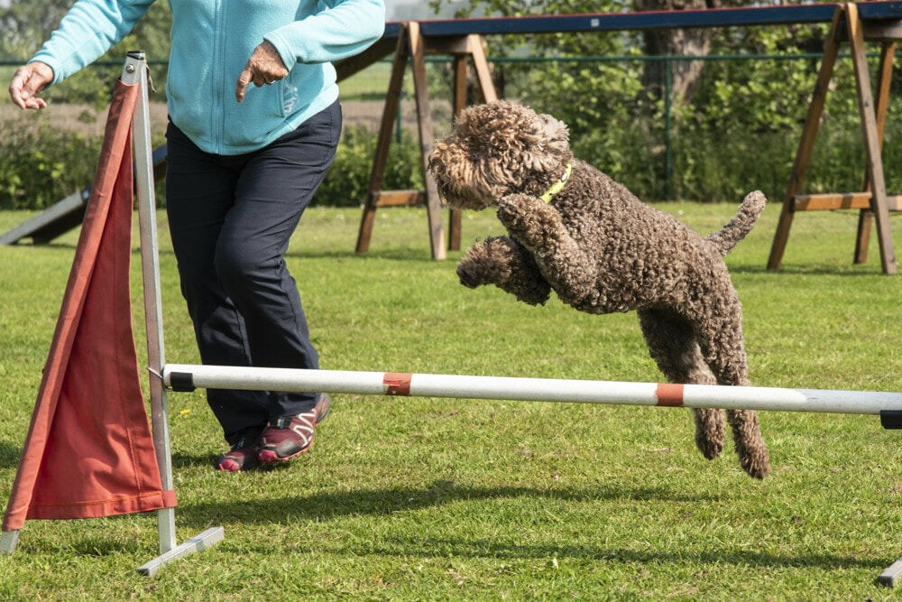

Agility
Agility of behendigheid op onze hondenschool heeft de bedoeling om samen met je hond plezier te beleven en de band met je hond te versterken. We doen dit niet in competitieverband.
De voorwaarden om bij ons agility te doen zijn:
- je hond is minstens een jaar.
- je hebt je hond onder controle, ook los.
- je brengt snoep en/of een speeltje mee ter motivatie voor de hond.
- je brengt je goed humeur mee en kijkt uit naar ‘fun’ met je hond.
We starten met een 10-tal instaplessen. Deze bestaan voornamelijk uit toestelgewenning, d.w.z. dat je op een positieve manier je hond laat gewoon worden aan de toestellen en hoe ze te gebruiken.
Na een overgangsproef start je bij de beginners. Hier leer je nog meer een team te vormen door met je stem en gebaren je hond tussen, over en door de verschillende toestellen te sturen.
Na een overgangsproef start je dan bij de gevorderden. Hier oefen je voornamelijk op snelheid een foutloos parcours te lopen.
Veel succes!!!


